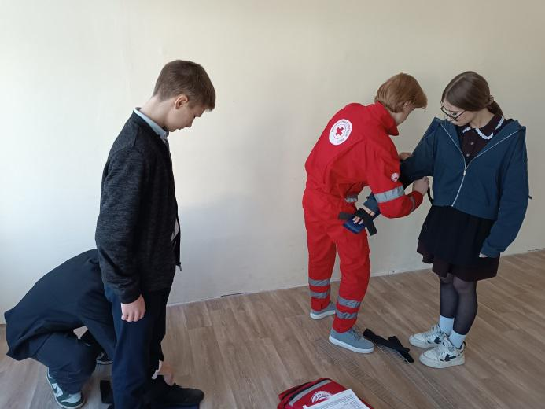
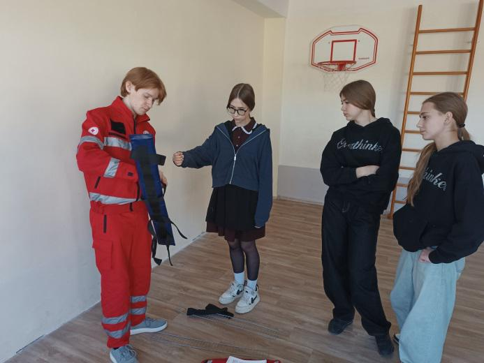
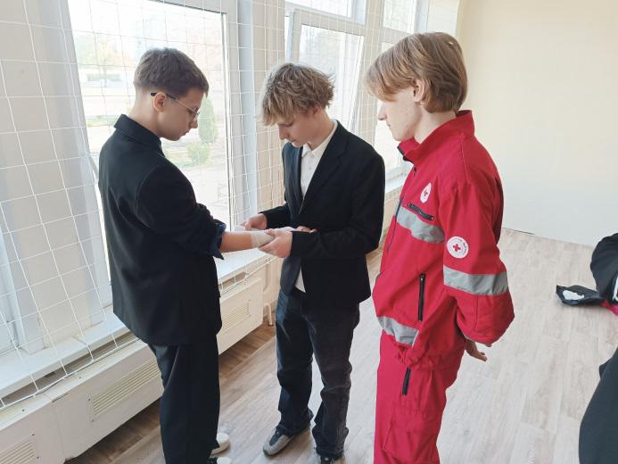
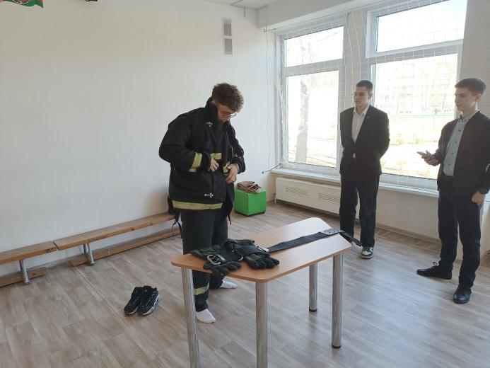
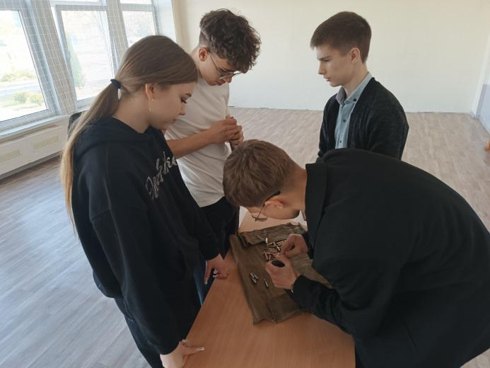

ПРОФЕССИОНАЛИЗМ ОТТАЧИВАЕТСЯ В ХОДЕ ТРЕНИРОВОК
Юнармейцы продолжают активно готовиться к районному этапу военно-патриотической игры «Орленок». В ходе систематических тренировок они приобретают и оттачивают новые навыки и совершенствуют уже те, которые были получены в ходе участия в военно-патриотической игре «Зарница». Сегодня, 15 апреля, гимназисты отрабатывали вопросы выполнения по снаряжению патронами и разряжению магазина автомата Калашникова, надеванию боёвки спасателя и оказанию первой помощи пострадавшим.

Помощь в подготовке ребят оказывают и учащиеся выпускных классов. Так, учащийся 11 «Г» класса Егор Стадний, который является волонтером Борисовской районной организации Республиканского общественного объединения «Белорусское Общество Красного Креста», научил юнармейцев приемам оказания помощи при переломах и остановки кровотечения.



